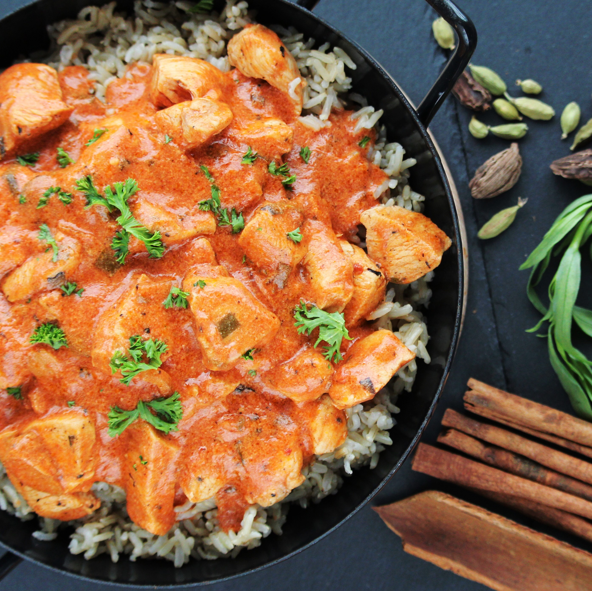

Home
Chicken Curry

Description
This is the Malaysian version of Indian chicken curry, which uses coconut milk. It can be substituted with yogurt or low-fat milk, but the taste won't be the same.
Ingredients
- 1/2 star anise pod
- 3 whole cloves
- 2 teaspoons chopped fresh curry leaves
- 1 tablespoon chopped shallots
- 4 cloves garlic, chopped
- 1 slice fresh ginger root, chopped
- 4 tablespoons curry paste
- 1/2 cup thick coconut milk
- 2 cups water
- 3 pounds skinless, boneless chicken breast halves - cut into 2 inch pieces
- 2 tablespoons tamarind juice
- salt to taste
- 2 tablespoons olive oil
- 1 (2 inch) piece cinnamon stick
Directions
- Heat oil in a large, deep skillet over medium heat. Saute the cinnamon, cardamom, anise, cloves and curry leaves for 2 to 3 minutes, then stir in shallots, garlic and ginger and saute until fragrant. Stir in curry paste and cook for 5 minutes, stirring constantly.
- Pour in the coconut milk and water and let simmer for 3 to 4 minutes; add chicken, tamarind juice and salt and simmer, stirring occasionally, for 20 minutes.